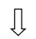

Articles in singular and plural – Artikeln im Singular und Plural
Articles in singular and plural – Artikeln im Singular und Plural All nouns in German have articles which stand before them. There are two kinds of articles.
 Definiter / bestimmter Artikel (definite article)
Definiter / bestimmter Artikel (definite article)- Indefiniter / unbestimmter Artikel (indefinite article)
What is the definite and indefinite articles?
In English the definite article is the word 'the' for both singular and plural nouns. We use (the) to indicate that the identity of the noun is known to the reader.
In German, as we have seen in the lesson of nouns, the definite articles for singular nouns are:
- 'der' before masculine noun. Der Schrank the cupboard
- 'die' before feminine noun. Die Lampe the lamb
- 'das' before neuter noun. Das Bild the picture
For plural nouns, these three genders (der, das, die) become (die)...
Beispiel (example):
We use the indefinite article like (a, an) in English before a noun that is general or when its identity is not known. As there are 3 definite articles in German, we also have 3 indefinite articles:
- 'ein' before a masculine noun ein Stift a pen
- 'eine' before a feminine noun. eine Brille a glasses
- 'ein' before a neuter noun. ein Buch
 a book
a book
Beispiel (example):
Here we are not talking about a particular man
Das ist ein Mann.
Der Mann liest ein Buch
(This is man)
(The man reads a book)
Note: We do not always
use the indefinite article
in the plural form

Here we are talking about a particular person
Ergänzen Sie die Tabelle mit unbestimmten Artikeln!
Complete the table with indefinite articles!